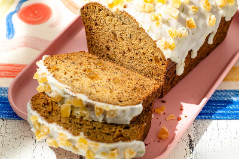

Dark and Stormy Banana Bread recipe

Ingredients
Cooking spray
2 cups (260g) all-purpose flour
- teaspoon baking soda
- 1 teaspoon ground cinnamon
- 3/4 teaspoon ground ginger
- 1/2 teaspoon ground nutmeg
- 1/2 teaspoon fine sea salt
- 1 cup (170g) lightly packed light brown sugar
- 1/2 cup (1 stick) unsalted butter, melted
- 2 large eggs
- 2 tablespoons dark spiced rum
- 2 teaspoons vanilla extract
- 1 teaspoon finely grated fresh ginger
- 2 medium very ripe bananas, mashed
- 1/3 cup finely diced candied ginger, optional
- 1 cup (114g) powdered sugar
- 1 to 2 tablespoons fresh lime juice
- 1 teaspoon finely grated lime zest
- 1 to 2 tablespoons chopped candied ginger, optional
Method
- Place a rack in the upper third of the oven and preheat the oven to 350°F.
Lightly grease a 9x5-inch pan. Line with a sheet of parchment paper
so it hangs a few inches over two sides and lightly grease the paper
as well. Parchment isn't entirely necessary, but will make removing the bread
from the pan easier.
-
In a medium bowl, whisk together the flour,
baking soda, cinnamon, ginger, nutmeg,
and salt until well combined. Set aside.
-
In a large bowl, whisk together the brown sugar and melted butter
until the sugar begins to dissolve. Whisk in the eggs,
one at a time, until the mixture is like brown sugar velvet.
Whisk in the rum, vanilla extract, and fresh ginger. Stir in the mashed bananas.
-
Add the dry ingredients to the wet ingredients.
Use a rubber spatula to combine into a thick but pourable batter.
Stir in the candied ginger, if using.
Pour the batter into the prepared pan and smooth the top.
-
Bake the bread until a toothpick inserted in the center
comes out clean or with a few moist crumbs, 45 to 55 minutes.
Allow the bread to cool in the pan for 15 minutes before removing to a cooling rack.
-
In a small bowl, whisk together the powdered sugar,
1 tablespoon lime juice, and lime zest. If desired,
add more lime juice for a thinner glaze. Drizzle over the warm
or room temperature bread.
While the glaze is still wet,
sprinkle the top with chopped candied ginger (if using).
Serve warm or at room temperature. The bread will keep,
tightly wrapped, for 3 days at room temperature.
go up
Return to the main page